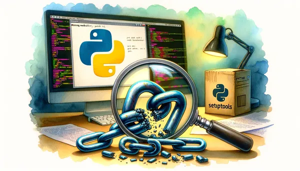

Eric J Ma's Website
written by Eric J. Ma on 2023-11-26 | tags: continuous integration python micromamba llamabot conda yaml mambaforge caching
In this blog post, I experimented with speeding up LlamaBot's CI system by switching from Miniconda to micromamba. The results were impressive, with more consistent timings and a significant reduction in build and test times. The primary advantage was the built-in, turnkey caching of the entire environment. This change made a noticeable difference, especially when testing against bleeding-edge packages. Could micromamba be the solution to your CI delays? Read on to find out!
Read on... (522 words, approximately 3 minutes reading time)written by Eric J. Ma on 2023-11-19 | tags: huggingface zephyr gpt4 benchmarking gitbot llm language models code summarization prompt engineering machine learning
In this blog post, I benchmarked Zephyr, a new language model by HuggingFace, against GPT-4 using GitBot. I found that while Zephyr shows promise, GPT-4 seems to offer a more out-of-the-box solution for accurately interpreting and summarizing code changes. However, different models may require different prompts to perform optimally. Curious about how these language models could change up your coding workflow?
Read on... (2071 words, approximately 11 minutes reading time)written by Eric J. Ma on 2023-11-12 | tags: job hunt hiring process career advice application tips interview preparation talent acquisition job offer negotiation tips career development job seeking
In this blog post, I share insights from my experience as both a job candidate and a hiring manager. I break down the hiring process into five stages: application submission, TA phone screen, hiring manager phone screen, onsite interview, and offer negotiation. Each stage has its own expectations and timelines, which can help you plan your job-seeking journey. Patience is key, and remember, each step is an opportunity to showcase your skills. Curious about what to expect at each stage and how long it might take? Read on!
Read on... (1002 words, approximately 6 minutes reading time)written by Eric J. Ma on 2023-11-05 | tags: professional transition public profile skill adaptation networking phd careers masters careers career strategies career development career advice
In this blog post, I share strategies to bridge the gap between academia and industry. I discuss enhancing your public profile, adapting your academic skills for industry, networking effectively, and communicating your value. These strategies can help PhDs, Master's grads, and those considering their academic future navigate their career more confidently. Curious about how to translate your academic achievements into industry value? Read on!
Read on... (957 words, approximately 5 minutes reading time)written by Eric J. Ma on 2023-10-29 | tags: pre-commit hooks code quality debugging python version setuptools dependency management github actions code style checks
In this blog post, I discuss a `ModuleNotFoundError` I encountered while using the pre-commit hook, interrogate, in Python 3.12. The issue arose due to a missing package, `setuptools`, which is no longer included by default in Python 3.12's virtual environments. I proposed a solution and provided a workaround by using Python<3.12 for pre-commit installation. This experience highlights the importance of tracking dependencies and adapting to language and library updates. Have you ever faced similar issues in your development workflow? Read on to find out more about my debugging journey.
Read on... (524 words, approximately 3 minutes reading time)written by Eric J. Ma on 2023-10-24 | tags: work relationships feedback conflict resolution meetings organizational dynamics team building career development transparency professional growth
In this blog post, I discuss the importance of regular 1:1 meetings and the benefits of 'skip-level' 1:1s, where you meet with your direct manager's manager. These meetings provide a broader perspective, facilitate understanding of organizational dynamics, and contribute to a culture of transparency and mutual respect. They are beneficial for both individual contributors and managers, fostering personal and organizational growth. If you're a team lead, encouraging your team members to engage in skip-level 1:1s demonstrates great leadership. Curious about how these meetings could transform your work routine and relationships?
Read on... (605 words, approximately 4 minutes reading time)written by Eric J. Ma on 2023-10-22 | tags: python large language models llms gitbot zotero local llms ollama langchain openai gpt-4 prompt engineering llamabot
In this blog post, I explore the integration of local Large Language Models (LLMs) with my LlamaBot project using Ollama. I discuss how Ollama simplifies the setup of local LLMs and demonstrate how to use Ollama models with LlamaBot. I also share a quick demo with Zotero chat using Ollama models. While OpenAI's GPT-4 remains the benchmark, local models offer cost-free alternatives. Curious to read more?
Read on... (582 words, approximately 3 minutes reading time)written by Eric J. Ma on 2023-10-18 | tags: bump2version version control pyproject.toml configuration pattern matching patch release dependencies llamabot pyds-cli problem solving
In this blog post, I share a solution to a problem I encountered with `bump2version`, where it was incorrectly updating all pattern-matched strings instead of just the version number. I found that by modifying the `.bumpversion.cfg` file, I could ensure only the version number was updated. This has been a game-changer for me and I'm excited to implement it into my `pyds-cli` default project templates. Curious about how this could streamline your own version control process? Read on to find out more!
Read on... (160 words, approximately 1 minute reading time)written by Eric J. Ma on 2023-10-14 | tags: pre-commit pre-commit hook automation python python script software development data science dalle-3 til
In this blog post, I share my experience creating a custom pre-commit hook for resizing images within a repository. This hook automates the process of ensuring all logos meet a defined width, saving time and maintaining consistency. It uses Python and integrates with the pre-commit framework, running in an isolated environment to keep the main project clean. I also discuss the potential of distributing these hooks for wider use. Curious about how you can automate checks and streamline your development process with pre-commit hooks?
Read on... (675 words, approximately 4 minutes reading time)written by Eric J. Ma on 2023-10-10 | tags: datascience testing machine learning best practices production research exploratory analysis
In this blog post, I discuss the importance of testing in data science code. I explain how research code can transition into production code and the potential implications of errors or oversights. I suggest three levels of testing: adding assertions within your notebook, migrating code into functions and testing them, and refactoring code into a library with associated test functions. By testing and refactoring our code, we can ensure its accuracy and reliability. Are you curious to see how you can test your code as a data scientist?
Read on... (893 words, approximately 5 minutes reading time)